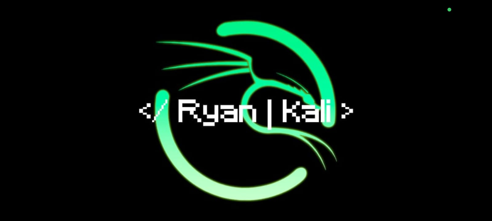
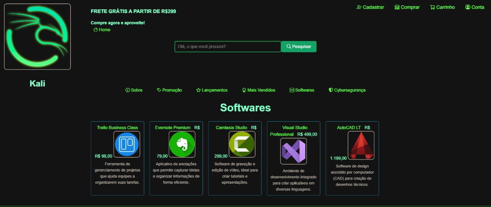

Olá, eu sou Ryan Rodrigues!
Tenho 19 anos, moro na cidade de São Paulo e sou estudante de Análise e Desenvolvimento de Sistemas na faculdade IMPACTA. Minha principal especialidade está diretamente atrelada ao desenvolvimento de softwares Back End, utilizando Python como linguagem principal, focado em Automações e Machine Learning. Gosto de trabalhar em equipe, escrever código limpo e testável, além de seguir as melhores práticas de desenvolvimento. Atualmente estou estudando JavaScript e Desenvolvimento Front End.
Experiência
Além de programação, trabalho no setor de atendimento ao cliente na empresa Leroy Merlin, onde ja criei automações para otimizar processos e melhorar a produtividade, utilizando Python e uma extensão do google chamada de MAGICAL, que permite a execução de scripts diretamente integrados ao CRM utilizado pela empresa, o Salesforce. Fora isso, exploro bastante a plataforma Discord, desenvolvendo sistemas de moderação e segurança para usuários.
Tecnologias
Projetos
-
Kali Bot
Neste projeto, eu desenvolvi uma integração personalizada e inspirada pelo bot Mee6 e o Kali Linux, permitindo o gerenciamento automatizado de permissões, detecção de atividades suspeitas e aplicação de ações moderativas sem necessidade de intervenção manual. Além disso, implementei funcionalidades exclusivas como logs automatizados, execução de comandos remotos e relatórios detalhados diretamente no Discord.
Esse sistema reforça a segurança do servidor e oferece um controle total sobre as interações e permissões de usuários dentro da plataforma.
Repositório: Kali Bot -
Kali Store
A Kali Store foi um projeto mais recente meu, onde comecei a desenvolver em aula para criação de boas práticas de criação de arquivos na web. A Kali se trata de uma loja fictícia que vende produtos de segurança, tecnologia e software, se destacando no quesito de produtos Open Source.
Repositório: Kali Store
-
Dataset Statistics | Openpyxl

O projeto Dataset foi desenvolvido para aprimorar minhas habilidades em Python e manipulação de planilhas Excel. Através da biblioteca Openpyxl, criei um sistema de análise de dados que lê, processa e gera relatórios a partir de planilhas Excel. Ao ser integrado ao MAGICAL google extension, o sistema permite a execução de um comando que recebe toda essa base de dados.
Repositório: Dataset Statistics